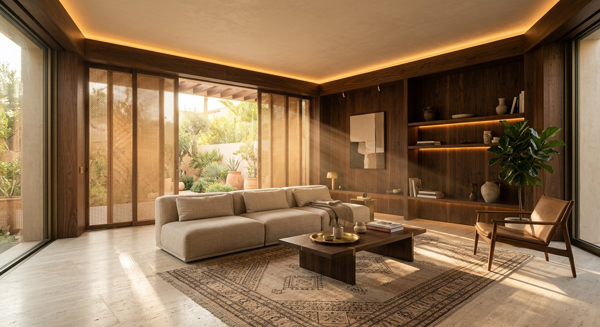
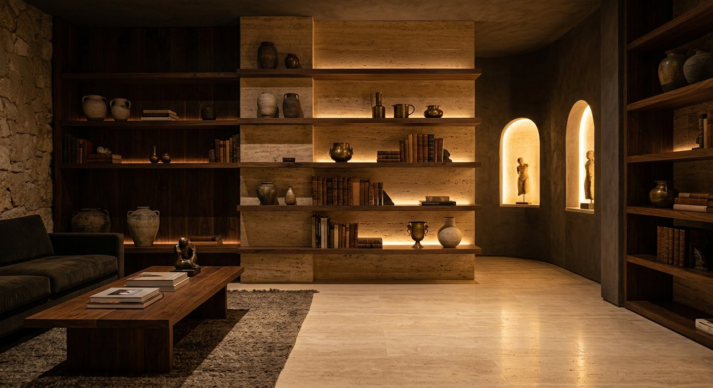
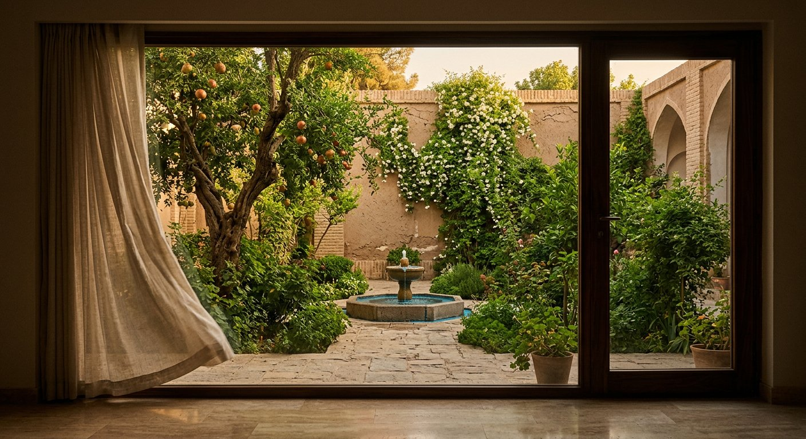
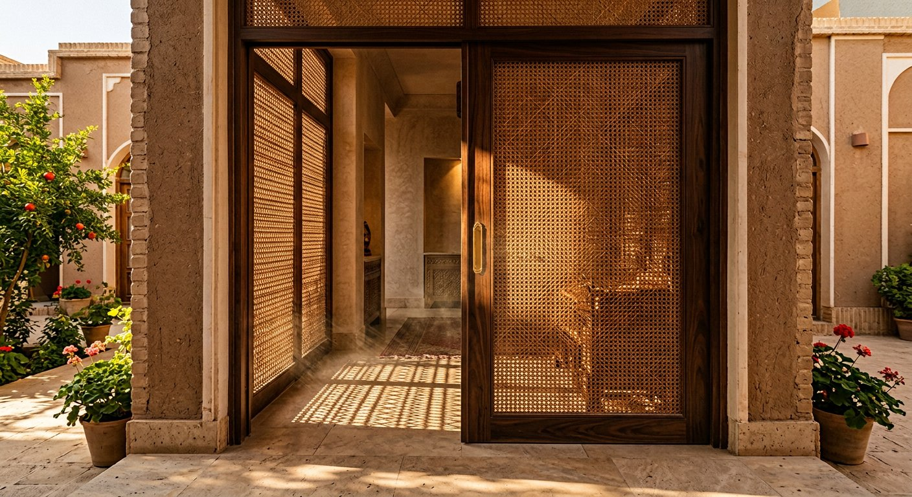
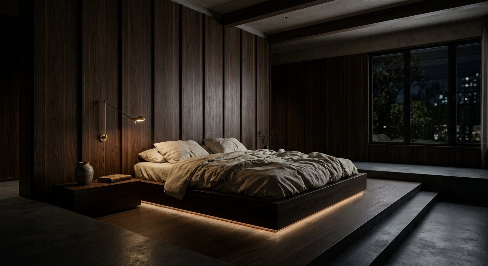
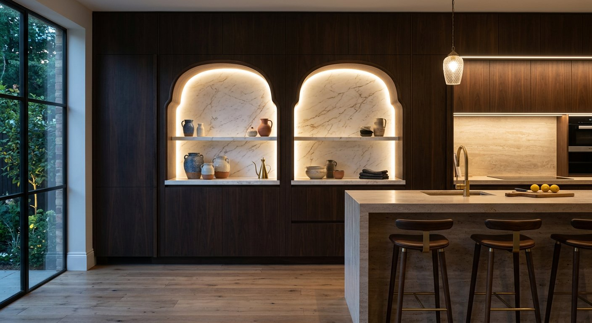
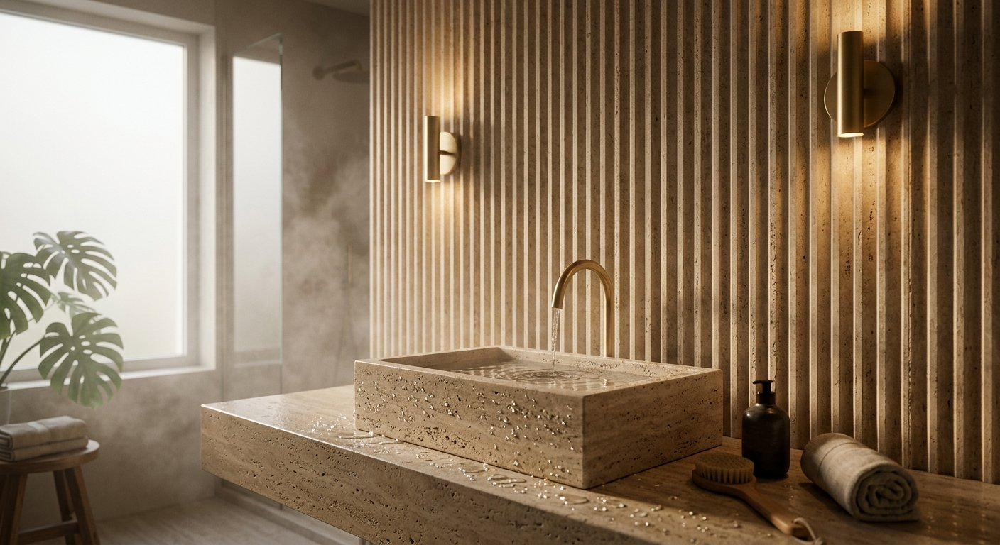
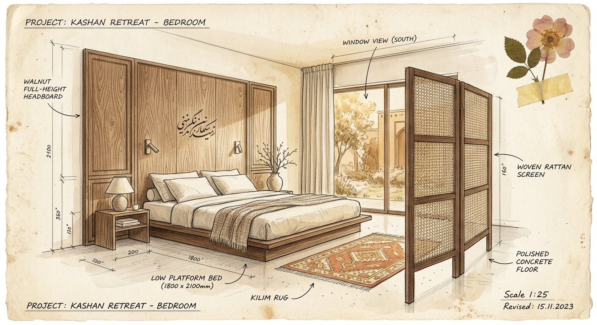
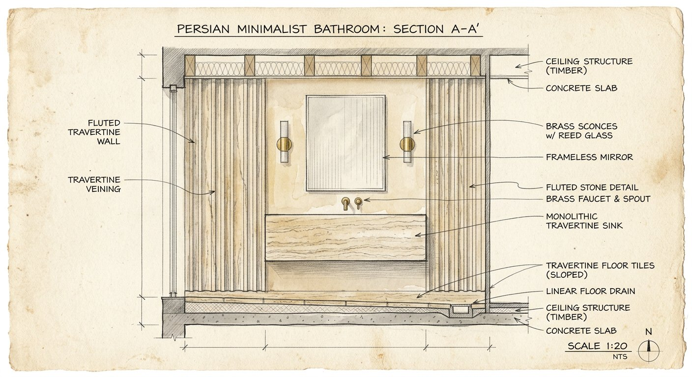
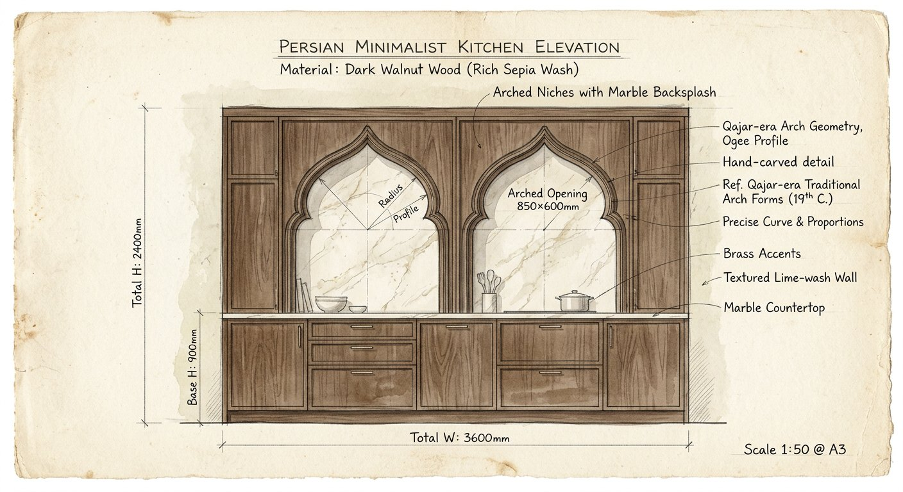

SAHI STUDIO PRESENTS — SHIRAZ 1404
روایتی سینمایی از یک خانه؛ شش فصل، شش ایده. جایی که چوب تیره، حصیر و نورِ پنهان، سکوت را قابل زندگی میکنند.
کارفرما خانهای خواست که «شبها آرام و روزها روشن» باشد — دو خواستهی بهظاهر متناقض در اقلیم گرم و خشک شیراز، جایی که آفتاب بعدازظهر بیرحمانه میتابد و شبها سکوت مطلق حکمفرماست.
ما به جای افزودن، کم کردیم: پالتی از شش متریال، یک دمای نور ثابت، و شش لحظهای که خانه را روایت میکنند.
شیراز، نیمهخشک با تابستانهای داغ (تا ۴۰°C) و زمستانهای ملایم. آفتاب تند بعدازظهر نیاز به فیلتر نوری دارد.
آپارتمان طبقه میانی در بافت مسکونی شیراز. نورگیر جنوبی با حیاط کوچک داخلی. سقف ۳.۲ متر.
بازشوهای اصلی رو به حیاط جنوبی. صفحات حصیری در جبهه غربی بهعنوان فیلتر نور عمل میکنند.
عدم امکان تغییر نما. نورگیر محدود در سرویسها. ارتفاع سقف غیرمعمول فرصت ایجاد پلتفرم داد.

«ما به جای افزودن، کم کردیم.»
ایده مرکزی «سکوت قابل سکونت» است. فضایی که هیچ عنصر اضافهای در آن فریاد نمیزند؛ هر متریال با صدای خودش حرف میزند و نور، نامرئیترین معمار خانه است.

از تاقهای خانههای قاجاری شیراز و فضای نیمهتاریک کاروانسراها. از سکوت باغهای ایرانی.
حجمهای مکعبی ساده با حفرههای منحنی. هر حفره ارجاعی به تاقهای سنتی در مقیاس مبلمان.
آستانه → نشیمن → آشپزخانه → اتاق خواب → سرویس → حیاط. از فیلتر تا رها شدن.

پردهای از حصیر
خانه با یک فیلتر آغاز میشود، نه با یک در. صفحات کشویی حصیری، آفتاب تند بعدازظهر شیراز را میگیرند و آن را به دانههای ریز نور تبدیل میکنند.
نور را نبند، ترجمهاش کن.

تخت پایین، دیوار گردو
کف اتاق پایین میآید تا سقف بلندتر حس شود. هدبرد یکپارچه از چوب گردوی تیره تا لبه سقف بالا میرود و اتاق را مثل یک جعبهی صدا در خود میگیرد.
تاریکی زمینه است، روشنی اتفاق.
خطوط پنهان
هیچ لامپی دیده نمیشود. نور از شکافهای میان قفسهها، از زیر لبهها و از پشت طاقچهها بیرون میزند و ماده را روشن میکند، نه چشم را.
چراغ را پنهان کن، سطح را روشن کن.

آشپزخانه و مرمر
در دل بدنهی تیرهی آشپزخانه، دو طاقچه با گوشههای نرم بریده شدهاند؛ ارجاعی به تاقهای خانههای قدیمی شیراز. مرمر روشن عمق را برمیگرداند.
تزیین را حذف کن، جایش حفره بساز.

سرویس و لمس
روشویی یک کاسهی سنگی یکپارچه است روی کانتر تراورتن؛ سطحی که دست باید آن را لمس کند تا باور شود. دیوار فلوتشده نور دو دیوارکوب را میشکند.
جزئیاتی که دست میفهمد، نه دوربین.
حیاط و پایان روایت
هر فضای اصلی به یک برگ ختم میشود. پنجرههای تمامقد حیاط کوچک را قاب میکنند تا سبز تنها رنگ سیر پالت باشد. خانه با نگاه به بیرون تمام میشود.
آخرین متریالِ خانه، باغ است.
«تاریکی زمینه است، روشنی اتفاق.»
رنگ از جنس متریال میآید، نه از قوطی رنگ. دانه چوب، بافت حصیر، رگه تراورتن — هر سطح داستان خودش را دارد. هیچ سطحی صرفاً رنگآمیزی نشده.
نور در خانه شماره ۶ سه لایه دارد و هرگز منبعش دیده نمیشود. هدف: روشنکردن سطح، نه چشم.
نوار LED داخل شیار ۴۰mm، نور را روی سطح پخش میکند. برای روشنایی عمومی.
زیر کابینت، داخل طاقچه. فقط سطح کار روشن. CRI بالای ۹۵ برای وفاداری رنگ.
دیوارکوبهای کمشدت. شدت ۵ درصد برای شب. فقط لبهها و بافتها.
مسیر بازدیدکننده: یک سفر حسی از روشنایی به تاریکی و بازگشت به نور.
از بیرون پرنور وارد فیلتر حصیری. نور به دانههای ریز تبدیل میشود. مکث. چشم عادت میکند.
هیچ لامپی دیده نمیشود. نور از شکافها و لبهها میآید. قفسهها اشیاء را قاب میکنند.
بدنه تیره با دو حفره منحنی روشن. ارجاع به تاقهای قدیمی. مرمر عمق ایجاد میکند.
کف پایینتر، سقف بلندتر. گردو از هر طرف. ملافه کتان تنها نقطه روشن.
دست روی تراورتن. فلوتها سایه میاندازند. آب روی سنگ جاری میشود.
پنجره تمامقد باز. آستانه صفر. سبز تنها رنگ سیر. خانه با نگاه به بیرون تمام میشود.
صفحات حصیری آفتاب تند را فیلتر و به نور ملایم تبدیل میکنند — کاهش ۶۰٪ نیاز به نور مصنوعی.
بازشوهای تمامقد در دو جبهه، کوران عرضی ایجاد میکنند. حیاط دودکش حرارتی.
تراورتن و چوب ماسیو نوسان دما را کاهش میدهند.
تمام متریالها طبیعی و قابل بازیافت. بدون MDF، PVC، رنگ شیمیایی.
«آخرین متریالِ خانه، باغ است.»
هر فصل با یک اسکیس دستی شروع شد؛ همان خطوطی که بعداً به چوب و سنگ ترجمه شدند.



خانه شماره ۶ ثابت میکند که کمکردن، خودش یک عمل معماری است. شش متریال، یک دمای نور، و شش لحظهای که سکوت را قابل زندگی میکنند.
استودیو سَهی — شیراز — ۱۴۰۴